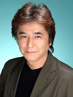

Hitoshi Bifu is a Japanese voice actor. He voiced in Pretty Cure and Digimon.
- Gender: Male
- Birthday: November 20, 1964
- Birthplace: Saitama, Japan
- Hobbies: Movies
| |
Hitoshi Bifu is a Japanese voice actor. He voiced in Pretty Cure and Digimon.
|
 |
|---|
 |
Circulas | Pretty Cure Max Heart | Circulas appears to be the leader of the group whenever Baldez isn't around. He often bickers with Uraganos. He is calm within the mansion. |
Go Back to Main Page |
Go Back to Homepage |
|
|
|
OR |
|